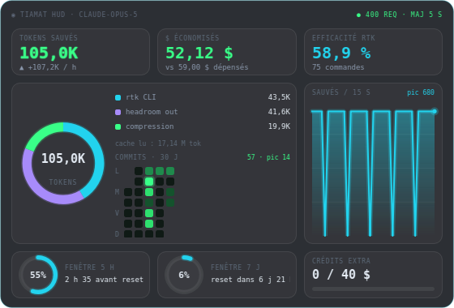
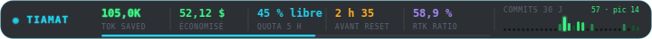
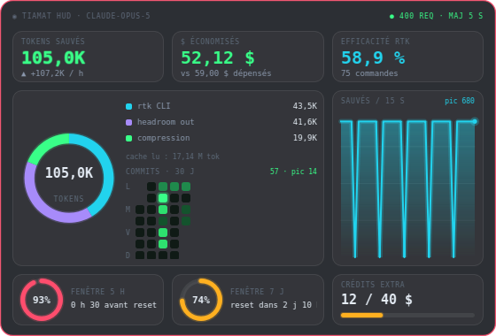

Livré · widget natif PyQt6
✅ Construit : scénario C repliable en A
captures du vrai widgetVos choix appliqués : dashboard 560×380 ↔ ticker 720×44 (double-clic), historique persistant, alertes quota 70 / 90 %, icône systray. Images ci-dessous = QWidget.grab() sur le widget réel alimenté par vos données live.

Mode dashboard · données live (rtk 43 cmd, headroom 251 req, quota 5 h 17 %)

Mode ticker · double-clic pour basculer

Alerte : 5 h à 93 % (rouge pulsé) · 7 j à 74 % (orange)
Lancer
python3 -m venv .venv .venv/bin/pip install -r requirements.txt .venv/bin/python -m tiamat_hud
Tests
.venv/bin/python -m pytest tests -q # 12 passed
Parsing, seuils, formats, dégradation si source absente. Sans affichage.
Fichiers
tiamat_hud/{__main__,hud,gauges,store,collectors,model,theme}.py
tests/test_metrics.py · README.md
Environnement : PyQt6 installé dans .venv sur Python 3.14.4, Qt 6.11. Vérifié en réel sur X11 (DISPLAY=:0).
Livré · votre choix implémenté
7 · Heatmap de commits GitHub - mois glissant
✅ Option 1 + strip ticker · source gh GraphQL avec repli git log
18 tests · captures réelles
Les cinq indicateurs d'origine du ticker sont conservés, le strip commits est suffixé derrière un séparateur. Le dashboard reste à 560 × 380.
Heatmap logée sous la légende du donut · 57 contributions, pic 14
Ticker : 5 indicateurs initiaux intacts + strip 30 jours suffixé
Repli hors ligne
Sans gh, git log balaie les clones locaux (email du committer). Sous-estime par construction, donc le panneau s'étiquette local. Les deux en échec : grille vide, « github indisponible ».
Coût
Un seul appel réseau, toutes les 10 min, dans un QRunnable. Le reste du HUD reste 100 % local.
Correctif au passage
Les reprises de session créaient un pic aberrant dans la courbe : les paires de points espacées de plus de 45 s sont désormais ignorées.
Dossier de conception de cette section
Même grammaire que le graphe de contributions GitHub, retranscrite en néon : vert sombre pour un jour creux, vert saturé + halo pour un pic. Toutes les cellules ci-dessous affichent vos vraies contributions des 30 derniers jours (compte tiamat-azure, 57 contributions sur l'année, pic à 14 le 21/07).
Échelle de couleurs
GitHub découpe en 4 niveaux par quantiles, pas par valeurs fixes - indispensable ici : avec un pic à 14, une échelle fixe 1/3/6/9 écraserait tout. Le niveau max reçoit seul le halo, sinon la grille entière brille et perd sa hiérarchie.
Option 1 · dans l'espace libre du panneau donut recommandé
Le panneau répartition a ~110 px de vide sous la légende. La heatmap s'y loge sans changer la taille du dashboard.
répartitioncommits · 30 j
rtk CLI 42,8K
headroom out 18,1K
compression 4 913
- +Zéro pixel supplémentaire : le dashboard reste à 560 × 380.
- +Voisinage cohérent : « ce que j'ai produit » à côté de « ce que ça m'a coûté ».
- +Cellules à 11 px : au-dessus du seuil de survol confortable.
- −Le panneau devient dense : deux lectures concurrentes dans une même boîte.
- −Plus de place pour une 4ᵉ catégorie dans la légende du donut.
Option 2 · bandeau dédié pleine largeur
Une ligne à part sous les jauges. Le dashboard passe à 560 × 442 px.
activité commits · 30 jours glissants
57 contributions · pic 14
série en cours
2 j
meilleure série 30 j : 6 j
- +Grille lisible, cellules 13 px, place pour les étiquettes de jours et de mois.
- +Accueille des indicateurs dérivés (série en cours, meilleure série) sans écraser le reste.
- +Aucun compromis sur les panneaux existants.
- −442 px de haut : le HUD devient franchement présent sur un 1080p.
- −Deux « lignes du bas » concurrentes : quota et commits se disputent l'attention.
Mode ticker · strip 30 jours sur une ligne
44 px de haut interdisent une grille 7 lignes. Une cellule par jour, hauteur proportionnelle, même échelle de vert. Le pic reste immédiatement repérable.
◉ TIAMAT
65,8Ktok saved
83 % librequota 5 h
commits 30 j57 · pic 14
- +Tient dans les 44 px sans toucher aux autres cellules.
- +Double codage hauteur + couleur : lisible même à 2 px de large par jour.
- −Perd la structure hebdomadaire : on ne repère plus « les week-ends creux ».
- −Une cellule ≈ 6 px : le survol jour par jour n'est pas praticable.
D'où viennent les commits
| Source | Ce qu'on obtient | Coût / risque | |
|---|---|---|---|
gh api graphqlcontributionsCollection |
Exactement ce que montre la page de profil : tous dépôts, publics et privés, agrégés par jour avec le weekday officiel |
Appel réseau 300-600 ms, à cacher 10 min ; dépend de gh auth |
retenu |
git log local |
Commits des dépôts présents sur la machine | Hors ligne et instantané, mais faux par construction : rate tout dépôt non cloné | repli |
API REST /events |
Flux d'événements publics | Fenêtre de 90 événements, exclut le privé - ne reproduit pas le graphe de profil | non |
Vérifié à l'instant : gh auth status connecté en tiamat-azure, la requête GraphQL renvoie bien les 30 jours utilisés dans ces maquettes. Le collecteur suivra le motif existant (QRunnable hors thread UI, intervalle 600 s, dégradation silencieuse si gh absent : la grille reste au niveau 0 et l'en-tête indique « github indisponible »).
Dossier de conception (référence)
HUD Néon tiamat - économies headroom + rtk, quota Claude
Widget PyQt6 sans fenêtre ni bordure, toujours visible, style Grafana sombre + accents néon. Trois scénarios de densité, une bibliothèque de gauges, et le câblage aux sources de données réelles déjà présentes sur la machine.
PyQt6 6.9 · Qt 6.9
frameless + translucent
données live vérifiées
PyQt6 pas encore installé ici
1 · Les indicateurs existent déjà - voici d'où ils viennent
Valeurs relevées sur cette machine le 2026-08-06. Aucune donnée inventée dans les maquettes ci-dessous.
| Indicateur | Source | Valeur réelle relevée | Coût de lecture |
|---|---|---|---|
| Tokens économisés rtk | rtk gain -f json | 42 803 tok · 91,7 % · 38 cmd | subprocess ~40 ms |
| Compression headroom | ~/.headroom/proxy_savings.json → lifetime | 4 472 tok · 226 requêtes | lecture fichier |
| Économie output headroom | idem → output_tokens_saved | 15 262 tok · 0,23 $ | lecture fichier |
| Économie cache | idem → cache_savings_usd | 15,39 $ · 5,13 M tok lus | lecture fichier |
| Dépense réelle | idem → total_input_cost_usd | 17,51 $ | lecture fichier |
| Quota 5 h / 7 j | ~/.headroom/subscription_state.json → latest | 5 h : 6 % · 7 j : 0 % · reset 03:50Z | lecture fichier |
| Crédits extra | idem → extra_usage | 0,00 $ / 40,00 $ | lecture fichier |
| Flux d'événements | ~/.headroom/savings_events.jsonl (append-only) | 1 ligne / requête, saved + cost_usd | tail incrémental |
⚠︎ Deux pièges déjà identifiés : (a) five_hour.limit vaut 0 - seul utilization_pct est fiable, donc « tokens restants » s'affiche en % restant + temps avant reset, pas en tokens absolus ; (b) rtk cc-economics est actuellement cassé (ccusage : missing field `month`) - à ne pas mettre dans le chemin critique.
2 · Architecture - collecte hors du thread UI
Un seul QTimer côté UI ; toute I/O (subprocess rtk, lecture JSON) part dans un QThreadPool pour ne jamais figer le rendu néon.
flowchart LR
subgraph SRC["Sources locales"]
A1["rtk gain -f json"]
A2["proxy_savings.json"]
A3["subscription_state.json"]
A4["savings_events.jsonl"]
end
subgraph COL["Collecteurs (QRunnable, hors UI)"]
C1["RtkCollector
30 s"] C2["HeadroomCollector
5 s (mtime watch)"] C3["QuotaCollector
15 s"] end M["MetricsStore
QObject + pyqtSignal(Snapshot)
ring buffer 240 pts"] subgraph UI["HUD frameless"] W1["KPI tiles"] W2["Donut répartition"] W3["Gauges quota 5h / 7j"] W4["Sparkline / aire"] end A1 --> C1 --> M A2 --> C2 --> M A4 --> C2 A3 --> C3 --> M M -- "snapshotReady" --> W1 M --> W2 M --> W3 M --> W4
30 s"] C2["HeadroomCollector
5 s (mtime watch)"] C3["QuotaCollector
15 s"] end M["MetricsStore
QObject + pyqtSignal(Snapshot)
ring buffer 240 pts"] subgraph UI["HUD frameless"] W1["KPI tiles"] W2["Donut répartition"] W3["Gauges quota 5h / 7j"] W4["Sparkline / aire"] end A1 --> C1 --> M A2 --> C2 --> M A4 --> C2 A3 --> C3 --> M M -- "snapshotReady" --> W1 M --> W2 M --> W3 M --> W4
3 · Trois scénarios de densité
Mêmes données, trois surfaces. Les maquettes ci-dessous sont à l'échelle réelle en pixels : ce que vous voyez est la taille qu'aura le widget à l'écran.
Scénario A · Ticker - barre 720 × 44 px
Collée en haut d'écran, toujours visible, zéro obstruction. Clic = déplie le scénario C.
◉ TIAMAT
62,5Ktok saved
15,62 $économisé
quota 5 h94 % libre
4 h 08avant reset
91,7 %rtk ratio
- +Ne mange jamais l'espace de travail ; s'intègre comme une barre système.
- +Repeint quasi gratuit : pas de graphique, ~0,2 % CPU.
- +Lisible du coin de l'œil pendant que Claude travaille.
- −Aucune tendance : on voit l'état, jamais l'évolution.
- −Pas de répartition rtk vs headroom vs cache.
- −Sur écran 1080p vertical, 720 px reste large.
Scénario B · Carte - 360 × 300 px
Coin d'écran. Donut de répartition des économies + deux jauges quota + sparkline.
◉ tiamat hud● live 5 s
tokens économisés
62 537
rtk 42,8K · hr 19,7K
$ économisés
15,62 $
dont cache 15,39 $
rtk CLI 42,8K
headroom out 15,3K
compression 4,5K
cache lu : 5,13 M tok
fenêtre 5 h6 %
reset dans 4 h 08
fenêtre 7 j0 %
reset 12/08 23:00
- +Répond aux trois questions du brief en un coup d'œil : combien économisé, par quoi, combien il reste.
- +Le donut rend visible que rtk pèse 68 % des tokens sauvés - insight impossible en barre.
- +Empreinte 360 px : tient dans un coin sans gêner un IDE.
- −Pas d'historique : impossible de voir un pic de consommation.
- −Le donut à 3 segments plafonne vite en lisibilité si on ajoute des catégories.
- −Deux fois plus de repaint que le scénario A.
Scénario C · Dashboard - 560 × 380 px recommandé
Le vrai « mini-Grafana » : KPI, donut, gauges radiales, aire temporelle, taux instantané.
◉ tiamat hud · claude-opus-5
● 226 req · maj 5 s
tokens sauvés
62 537
▲ +1,2K / h
$ économisés
15,62 $
vs 17,51 $ dépensés
efficacité rtk
91,7 %
38 commandes
répartition
tokens sauvés / 60 min
pic 4,1K
fenêtre 5 h
4 h 08 avant reset
fenêtre 7 j
reset 12/08
crédits extra
0 / 40 $
- +Seul scénario qui montre une tendance : un pic de consommation devient visible avant le mur de quota.
- +Couvre l'intégralité du brief (économies, répartition, tokens restants) sans interaction.
- +Se replie en scénario A d'un double-clic : une seule base de code, deux modes.
- −380 px de haut : intrusif sur un laptop 1080p, il faudra l'opacité réduite au survol inversé.
- −La série temporelle doit être persistée (ring buffer sur disque) sinon elle est vide à chaque lancement.
- −Plus de surface = plus de repaint ; il faut limiter le glow aux zones qui changent.
4 · Bibliothèque de gauges - ce qui marche, ce qui trahit
Chaque forme est jugée sur son ergonomie réelle pour ces données précises, pas sur son esthétique.
| Forme | À utiliser pour | Verdict |
|---|---|---|
| Donut (camembert troué) | Répartition rtk / headroom-output / compression | Retenu · 3 segments max, total au centre. Au-delà de 4 parts, illisible à 100 px. |
| Anneau radial (gauge) | % quota 5 h et 7 j | Retenu · une valeur bornée 0-100, code couleur cyan → orange → rouge à 70 / 90 %. |
| Aire + sparkline | Tokens sauvés par minute, historique 60 min | Retenu · seule forme qui expose la tendance. |
| Barre de progression fine | Crédits extra 0/40 $, ratio de compression | Retenu · compact, jamais ambigu. |
| Camembert plein | - | Écarté · sans trou central on perd la place du total, et la comparaison d'angles est moins précise qu'un donut légendé. |
| Jauge demi-lune type « compteur » | - | Écarté · très à la mode néon mais gaspille 40 % de la boîte englobante pour une seule valeur. |
| Heatmap horaire | Consommation par heure sur 7 j | Optionnel · superbe, mais exige un historique persistant que savings_events.jsonl ne couvre que partiellement. |
5 · Comment on rend ça en natif
Frameless + translucide
self.setWindowFlags(
Qt.WindowType.FramelessWindowHint
| Qt.WindowType.WindowStaysOnTopHint
| Qt.WindowType.Tool) # pas d'icône barre des tâches
self.setAttribute(
Qt.WidgetAttribute.WA_TranslucentBackground)
# déplacement : mousePress mémorise l'offset,
# mouseMove appelle self.move(event.globalPosition())
Sous Wayland, WindowStaysOnTopHint et le repositionnement global sont ignorés par certains compositeurs - fallback X11/XWayland ou couche layer-shell à vérifier au premier run.
Le néon, techniquement
- +
QPainter+QPenlarge et translucide sous le trait net = halo, sans coût GPU. - +
QGraphicsDropShadowEffect(blur 18, offset 0, couleur d'accent) sur les labels KPI uniquement. - +
QConicalGradientpour les arcs du donut,QLinearGradientpour l'aire. - −Le drop-shadow sur un widget qui repeint à 1 Hz est OK ; sur une animation à 60 fps il double le coût - animer via
QVariantAnimationsur les valeurs, pas sur l'effet.
Choix de stack
| Option | Pour | Contre | |
|---|---|---|---|
| PyQt6 + QPainter maison | Contrôle total du look néon, zéro dépendance graphique, binaire léger | ~250 lignes de peinture à écrire | retenu |
PyQt6 + QtCharts | Graphiques prêts | Style Qt difficile à « néoniser », licence GPL/commercial à surveiller | non |
PyQt6 + pyqtgraph | Séries temps réel performantes | Esthétique scientifique, lourd pour 4 courbes | si heatmap |
| PySide6 | Licence LGPL plus souple | API quasi identique - bascule triviale plus tard si besoin | alternative |
Note d'environnement : python3 -V = 3.14.4 et PyQt6 n'est pas installé dans ce venv. Première étape d'implémentation : pip install PyQt6 (roues cp314 à vérifier ; sinon PySide6 ou un venv 3.12).
6 · Votre arbitrage
Sélectionnez, puis envoyez - une seule réponse est renvoyée par question.